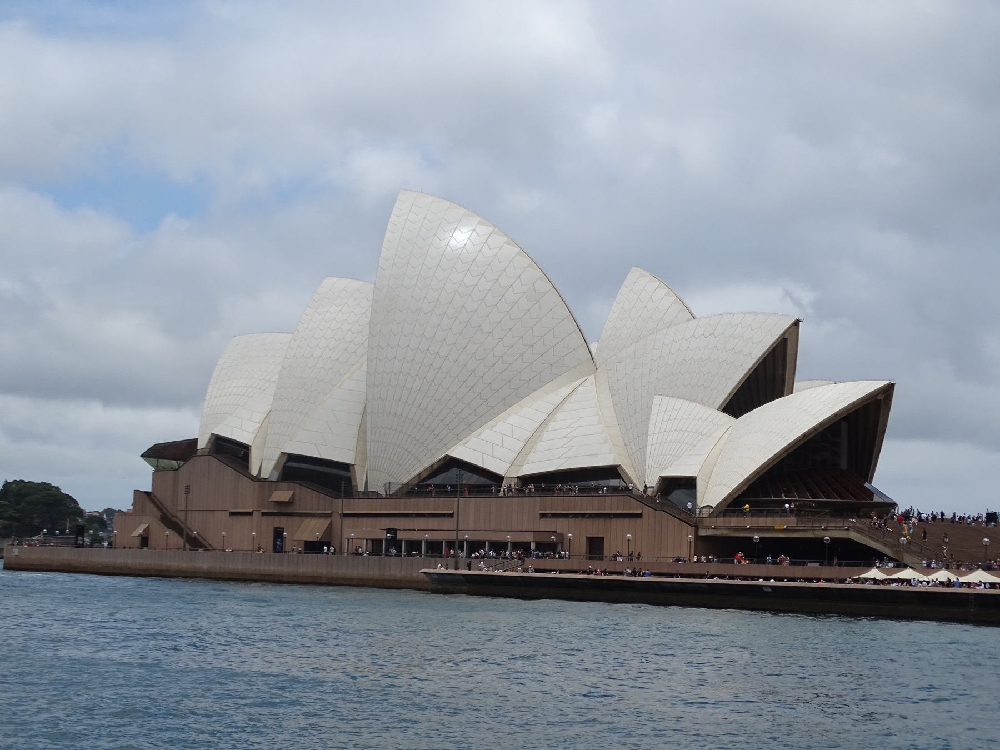

The Journey
六天，從墨爾本走到雪梨港灣
前半程住在墨爾本，安排市區散步、大洋路與 Phillip Island；5 月 27 日飛往雪梨，最後兩天留給港灣與市中心。

前半程住在墨爾本，安排市區散步、大洋路與 Phillip Island；5 月 27 日飛往雪梨，最後兩天留給港灣與市中心。
同一區的景點排在一起，長途日只留必要停靠；走路、用餐與交通都能順著當天的方向安排。
墨爾本巷弄的第一杯咖啡、大洋路的海風、企鵝上岸，以及雪梨港邊的早晨。
日期、區域、步行量與出發提醒都放在卡片上；需要早起或長途移動的日子一眼就能辨認。
航班、住宿、交通、穿搭與退稅分區收好，需要時展開查看，不必在長篇文字裡找資料。
5 月 23 日深夜從台北出發；5 月 27 日由墨爾本轉往雪梨；5 月 29 日晚間搭機返台。
墨爾本住 Dorsett Melbourne，雪梨住 Sofitel Darling Harbour。5 月 27 日集中處理還車、國內線與入住。
每一天先列出出發時間、活動區域、步行量、穿搭與交通，再依上午、下午與晚間閱讀完整路線。
先選日期，再查看當天的主要區域與地圖；長途路線和市區散步分開呈現。
已付款、已有金額與尚待估算的項目分開標示，可切換幣別查看兩人總額與每人預算。
| 項目 | TWD | AUD | 備註 |
|---|
超市零食可以提早買；蛋白石、Aesop 與羊毛小物留到市中心行程，再依來源、材質與行李空間挑選。
護照、ETA、訂單、穿搭與官方連結集中在這裡；出門前確認一次，途中也能快速重開。